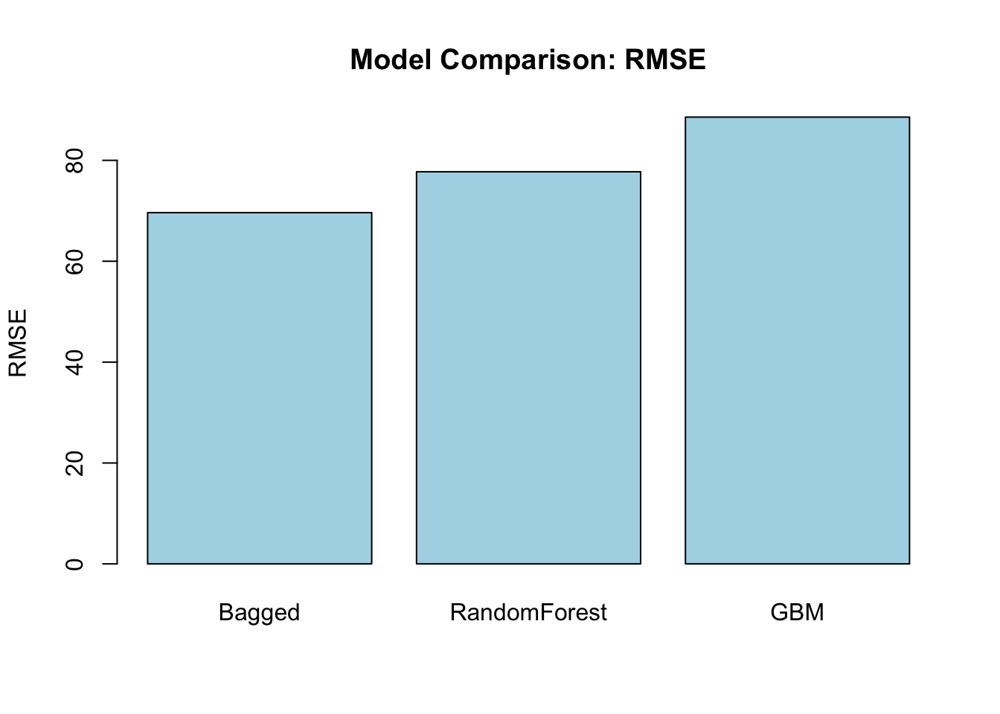
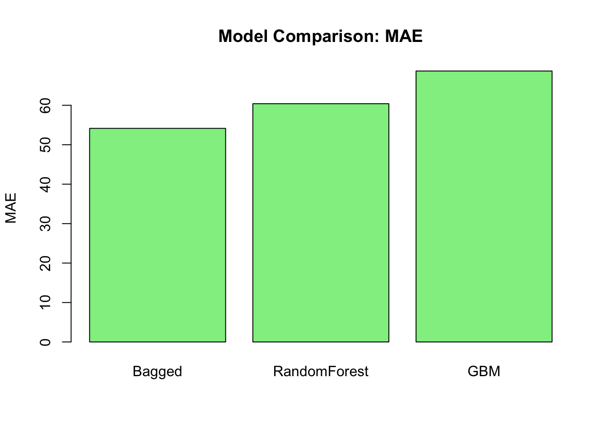
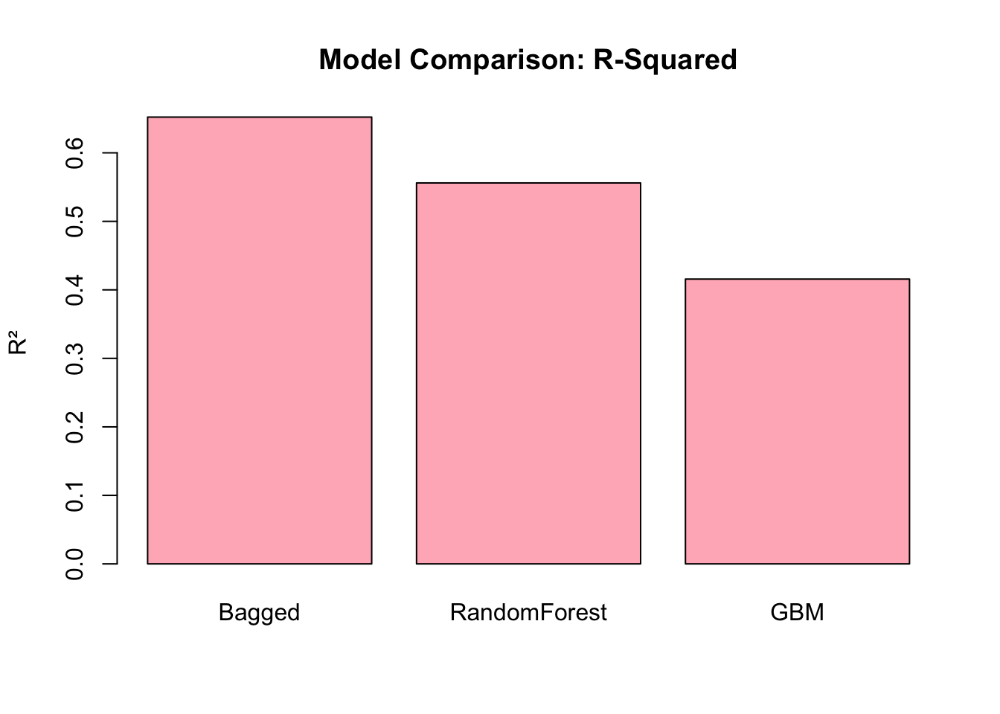
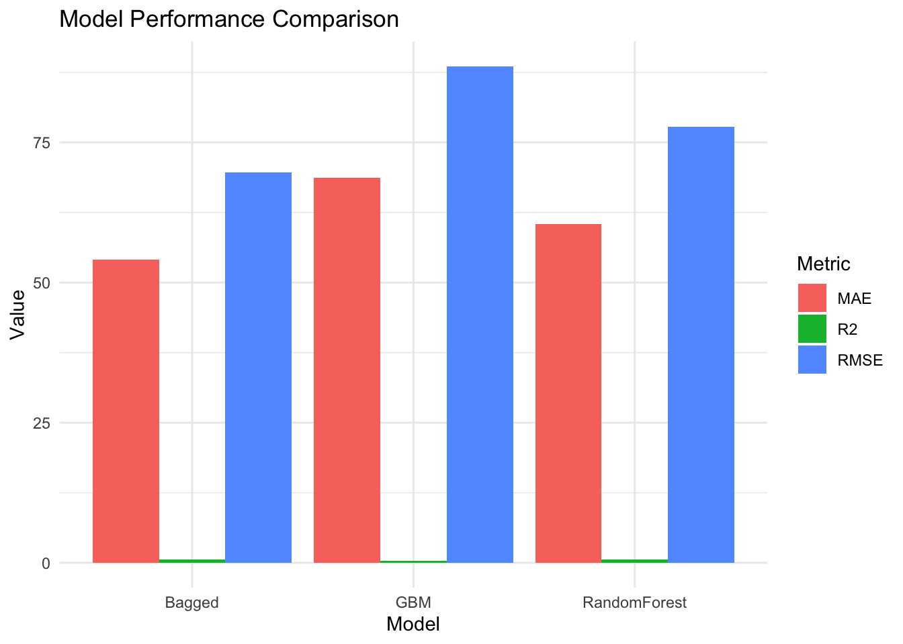

tweet <- read.csv('/Users/maiko/Desktop/EDLD654_ML/data/tweet_final.csv')A3
EDLD 654, Fall 2025: Assignment 3
The purpose of this assignment is to get you working with the caret package and ranger and gbm engine to fit Bagged Trees, Random Forests, and Gradient Boosting Trees for predicting a continuous or a categorical outcome. You will use the same datasets and recipes from the previous two assigments. Assignment 1.
There are alternative ways to submit your assignment depending on your preference.
You can Copy/Edit this notebook and complete it with your responses. Then, you can save and run the completed Kaggle notebook and submit the link through Canvas. If you keep your notebook Private, do not forget to share it with ‘Lina Shanley PhD’ so I can access it.
You copy/paste the questions and download the datasets from the notebook to your computer. Then, complete the assignment as an R markdown document. Then, you can knit the R Markdown document to a PDF and submit both the .Rmd and PDF files by uploading them on Canvas.
You knit the R Markdown document to an HTML document and host it on your website/blog or any publicly available platform. Then, you can submit the .Rmd file by uploading it on Canvas and putting the link for the HTML document as a comment.
If you have a GitHub repo and store all your work for this class in a GitHub repo, you can create a folder for this assignment in that repo and put the.Rmd file and PDF document under a specific folder. Then, you can submit the link for the GitHub repo on Canvas.
To receive full credit, you must complete the following tasks. Please make sure that all the R code you wrote for completing these tasks and any associated output are explicitly printed in your submitted document. If the task asks you to submit the data files you created, please upload these datasets along with your submission.
If you have any questions, please do not hesitate to reach out to me.
Task 1: Predicting a Categorical Outcome using Bagged Trees, Random Forests, and Gradient Boosting Trees
Description
For this assignment you will work with the twitter dataset and build models to predict the sentiment of a given tweet. We will use the same dataset from the previous two assignments. Processed tweet data is available as input data in this notebook. Please use the tweet data provided as input in this notebook, so there is consistency of code across people.
First, import the tweet data into the R environment (../input/assignment1tweet-final/tweet_final.csv). You can give any name to this data object. Print the structure of this data object using the str function.
require(tidyverse)
require(recipes)
blueprint_tweet <- recipe(x = tweet,
vars = colnames(tweet),
roles = c('outcome',rep('predictor',772))) %>%
step_dummy('month',one_hot=TRUE) %>%
step_harmonic('day',frequency=1,cycle_size=7, role='predictor') %>%
step_harmonic('date',frequency=1,cycle_size=31,role='predictor') %>%
step_harmonic('hour',frequency=1,cycle_size=24,role='predictor') %>%
step_normalize(paste0('V',1:768)) %>%
step_normalize(c('day_sin_1','day_cos_1',
'date_sin_1','date_cos_1',
'hour_sin_1','hour_cos_1')) %>%
step_num2factor(sentiment,
transform = function(x) x + 1,
levels=c('Negative','Positive'))# View(blueprint_tweet %>% prep() %>% summary)
# There are 777 predictors in the processed data
# 768 sentence embeddings + 3 dummy variables for month + 6 harmonic terms (2 variables per harmonic variable)Tasks
Task 1.1 Split the original data into two subsets: training and test. Let the training data have the 80% of cases and the test data have the 20% of the cases. Set the seed to 10312022 for any random sampling process before splitting data.
library(ranger)
library(pROC)
library(caret)set.seed(10312022)
loc_tweet <- sample(1:nrow(tweet), round(nrow(tweet) * 0.8))
tweet_tr <- tweet[loc_tweet, ]
tweet_te <- tweet[-loc_tweet, ]
dim(tweet_tr)[1] 1200 773dim(tweet_te)[1] 300 773Bagged Trees
Task 1.2 Use the caret::train() function and ranger engine to train a model with 10-fold cross-validation for predicting the probability of sentiment being positive using a Bagged Trees model with 500 trees. Set the max.dept argument to 60 and the min.node.size argument to 30. Note that you are supposed to use all predictors in the processed data for Bagged Trees.
prep_tweet <- blueprint_tweet %>% prep()
tweet_tr_processed <- juice(prep_tweet)
tweet_te_processed <- bake(prep_tweet, tweet_te)set.seed(10312022)
bagged_tweet <- ranger(
sentiment ~ .,
data = tweet_tr_processed,
num.trees = 500,
mtry = ncol(tweet_tr_processed) - 1, # use all predictors
min.node.size = 30,
max.depth = 60,
probability = TRUE,
importance = "none"
)
bagged_tweet$predictions[1:10, ] Negative Positive
[1,] 0.95368098 0.04631902
[2,] 0.45238640 0.54761360
[3,] 0.32504861 0.67495139
[4,] 0.09802554 0.90197446
[5,] 0.26180638 0.73819362
[6,] 0.38280317 0.61719683
[7,] 0.93184508 0.06815492
[8,] 0.61208601 0.38791399
[9,] 0.30669775 0.69330225
[10,] 0.16494056 0.83505944Task 1.3 Evaluate the performance of Bagged Trees model on the test set by computing AUC, TPR, TNR, FPR, and Precision.
# Step 1: Predict probabilities on the test set
bagged_probs <- predict(bagged_tweet, tweet_te_processed)$predictions[,"Positive"]
head(bagged_probs)[1] 0.7971424 0.7224561 0.2134873 0.7725982 0.2931611 0.9201947# Step 2: Convert probabilities to class predictions
bagged_class <- ifelse(bagged_probs > 0.5, "Positive", "Negative") %>% factor()library(pROC)
# Step 3: Compute AUC
bagged_auc <- roc(response = tweet_te_processed$sentiment,
predictor = bagged_probs,
levels = c("Negative", "Positive"))
bagged_auc_value <- auc(bagged_auc)
bagged_auc_valueArea under the curve: 1# Step 4: Confusion matrix
cm <- table(Predicted = bagged_class,
Actual = tweet_te_processed$sentiment)
cm Actual
Predicted Negative Positive
Negative 162 0
Positive 0 138TP <- cm["Positive","Positive"]
TN <- cm["Negative","Negative"]
FP <- cm["Positive","Negative"]
FN <- cm["Negative","Positive"]Random Forests
Task 1.4. Use the caret::train() function and ranger engine to train a model with 10-fold cross-validation for predicting the probability of sentiment being positive using a Random Forest model with 500 trees. Set the max.dept argument to 60 and the min.node.size argument to 30. Also, set the number of predictors to consider to 500 for each tree while growing a random forest.
library(caret)
library(ranger)
set.seed(10312022)
ctrl_rf <- trainControl(
method = "cv",
number = 10,
classProbs = TRUE,
summaryFunction = twoClassSummary
)grid_rf <- expand.grid(
mtry = 500, # assignment requirement
splitrule = "gini", # classification
min.node.size = 30
)# Step 3: Train Random Forest
rf_model <- train(
sentiment ~ .,
data = tweet_tr_processed,
method = "ranger",
trControl = ctrl_rf,
tuneGrid = grid_rf,
num.trees = 500,
max.depth = 60
)
rf_model$results mtry splitrule min.node.size ROC Sens Spec ROCSD
1 500 gini 30 0.8503965 0.7106667 0.8425965 0.02601027
SensSD SpecSD
1 0.08130787 0.04191476Task 1.5 Evaluate the performance of the Random Forest model on the test set by computing AUC, TPR, TNR, FPR, and Precision.
rf_probs <- predict(rf_model, tweet_te_processed, type = "prob")[,"Positive"]
head(rf_probs)[1] 0.7939414 0.7494637 0.2731671 0.7764780 0.3079719 0.9102424rf_class <- ifelse(rf_probs > 0.5, "Positive", "Negative") %>% factor()rf_auc <- roc(
response = tweet_te_processed$sentiment,
predictor = rf_probs,
levels = c("Negative", "Positive")
)
auc(rf_auc)Area under the curve: 1cm_rf <- table(
Predicted = rf_class,
Actual = tweet_te_processed$sentiment
)
cm_rf Actual
Predicted Negative Positive
Negative 162 0
Positive 0 138TP <- cm_rf["Positive","Positive"]
TN <- cm_rf["Negative","Negative"]
FP <- cm_rf["Positive","Negative"]
FN <- cm_rf["Negative","Positive"]
TPR <- TP / (TP + FN)
TNR <- TN / (TN + FP)
FPR <- FP / (FP + TN)
Precision <- TP / (TP + FP)
TPR[1] 1TNR[1] 1FPR[1] 0Precision[1] 1Gradient Boosting Trees
Task 1.6. Use the caret::train() function and gbm engine to train a model with 10-fold cross-validation for predicting the probability of sentiment being positive using a Gradient Boosting Tree model with 250 iterations (trees). Set the interaction.depth argument to 9, shrinkage argument to 0.05, and n.minobsinnode argument to 30. Also, set the bag.fraction argument to 0.5.
library(gbm)ctrl_gbm <- trainControl(
method = "cv",
number = 10,
classProbs = TRUE,
summaryFunction = twoClassSummary
)grid_gbm <- expand.grid(
n.trees = 250,
interaction.depth = 9,
shrinkage = 0.05,
n.minobsinnode = 30
)set.seed(10312022)
gbm_model <- train(
sentiment ~ .,
data = tweet_tr_processed,
method = "gbm",
trControl = ctrl_gbm,
tuneGrid = grid_gbm,
bag.fraction = 0.5,
verbose = FALSE
)# library(beepr)
#
# beep_on_done <- function(expr) {
# result <- eval(expr)
# beepr::beep(1)
# return(result)
# }gbm_modelStochastic Gradient Boosting
1500 samples
777 predictor
2 classes: 'Negative', 'Positive'
No pre-processing
Resampling: Cross-Validated (10 fold)
Summary of sample sizes: 1350, 1350, 1350, 1350, 1351, 1350, ...
Resampling results:
ROC Sens Spec
0.8830956 0.7698198 0.8280175
Tuning parameter 'n.trees' was held constant at a value of 250
Tuning
Tuning parameter 'shrinkage' was held constant at a value of 0.05
Tuning parameter 'n.minobsinnode' was held constant at a value of 30Task 1.7 Evaluate the performance of the Gradient Boosting model on the test set by computing AUC, TPR, TNR, FPR, and Precision.
gbm_probs <- predict(gbm_model, tweet_te_processed, type = "prob")[,"Positive"]
head(gbm_probs)[1] 0.86220071 0.85897129 0.09457047 0.96022677 0.13520563 0.99424026gbm_class <- ifelse(gbm_probs > 0.5, "Positive", "Negative") %>% factor()gbm_auc <- roc(
response = tweet_te_processed$sentiment,
predictor = gbm_probs,
levels = c("Negative","Positive")
)
auc(gbm_auc)Area under the curve: 1cm_gbm <- table(
Predicted = gbm_class,
Actual = tweet_te_processed$sentiment
)
cm_gbm Actual
Predicted Negative Positive
Negative 162 0
Positive 0 138TP <- cm_gbm["Positive","Positive"]
TN <- cm_gbm["Negative","Negative"]
FP <- cm_gbm["Positive","Negative"]
FN <- cm_gbm["Negative","Positive"]
TPR <- TP / (TP + FN)
TNR <- TN / (TN + FP)
FPR <- FP / (FP + TN)
Precision <- TP / (TP + FP)
TPR[1] 1TNR[1] 1FPR[1] 0Precision[1] 1Part 2: Predicting a Continous Outcome using Bagged Trees, Random Forests, and Gradient Boosting Trees
Description
For this assignment you will work with the Oregon dataset and try to predict the scores. The same dataset you worked in Assignment 1 is also available as input data in this notebook.
First, import the dataset and create the recipe by running the following code.
# Import data
oregon <- read.csv('/Users/maiko/Desktop/EDLD654_ML/data/oregon_final.csv', header = TRUE)
#dim(oregon)
#colnames(oregon)colnames(oregon) [1] "id" "sex" "ethnic_cd"
[4] "enrl_grd" "tst_bnch" "migrant_ed_fg"
[7] "ind_ed_fg" "sp_ed_fg" "tag_ed_fg"
[10] "econ_dsvntg" "stay_in_dist" "stay_in_schl"
[13] "dist_sped" "trgt_assist_fg" "ayp_dist_partic"
[16] "ayp_schl_partic" "ayp_dist_prfrm" "ayp_schl_prfrm"
[19] "rc_dist_partic" "rc_schl_partic" "rc_dist_prfrm"
[22] "rc_schl_prfrm" "grp_rpt_dist_partic" "grp_rpt_schl_partic"
[25] "grp_rpt_dist_prfrm" "grp_rpt_schl_prfrm" "score"
[28] "month" "date" require(recipes)
# Recipe/Blueprint for data preprocessing
outcome <- c('score')
id <- c('id')
categorical <- c('sex','ethnic_cd','tst_bnch','migrant_ed_fg','ind_ed_fg',
'sp_ed_fg','tag_ed_fg','econ_dsvntg','stay_in_dist',
'stay_in_schl','dist_sped','trgt_assist_fg',
'ayp_dist_partic','ayp_schl_partic','ayp_dist_prfrm',
'ayp_schl_prfrm','rc_dist_partic','rc_schl_partic',
'rc_dist_prfrm','rc_schl_prfrm','grp_rpt_dist_partic',
'grp_rpt_schl_partic','grp_rpt_dist_prfrm',
'grp_rpt_schl_prfrm')
numeric <- c('enrl_grd')
cyclic <- c('date','month')
blueprint_oregon <- recipe(x = oregon,
vars = c(id,outcome,categorical,numeric,cyclic),
roles = c('id','outcome',rep('predictor',27))) %>%
step_indicate_na(all_of(categorical),all_of(numeric)) %>%
step_zv(all_numeric()) %>%
step_impute_mean(all_of(numeric)) %>%
step_impute_mode(all_of(categorical)) %>%
step_harmonic('date',frequency=1,cycle_size=31) %>%
step_harmonic('month',frequency=1,cycle_size=12) %>%
step_poly(all_of(numeric),degree=3) %>%
step_normalize(paste0(numeric,'_poly_',1:3)) %>%
step_dummy(all_of(categorical),one_hot=TRUE)Tasks
Task 2.1. Split the original data into two subsets: training and test. Let the training data have the 80% of cases and the test data have the 20% of the cases. Set the seed to 10312022 for any random sampling process before splitting data.
prep_oregon <- blueprint_oregon %>% prep()set.seed(10312022)
loc <- sample(1:nrow(oregon), round(nrow(oregon) * 0.8))
oregon_tr <- oregon[loc, ]
oregon_te <- oregon[-loc, ]oregon_tr_processed <- juice(prep_oregon)
oregon_te_processed <- bake(prep_oregon, oregon_te)dim(oregon_tr_processed)[1] 189426 74dim(oregon_te_processed)[1] 37885 74ctrl <- trainControl(
method = "cv",
number = 10
)Bagged Trees
Task 2.2 Use the caret::train() function and ranger engine to train a model with 10-fold cross-validation for predicting the test scores using a Bagged Trees model with 250 trees. Set the max.dept argument to 60 and the min.node.size argument to 30. Note that you are supposed to use all predictors in the processed data for Bagged Trees.
library(caret)
ctrl2 <- trainControl(
method = "cv",
number = 10
)bagged_grid <- expand.grid(
mtry = ncol(oregon_tr_processed) - 1, # all predictors
splitrule = "variance",
min.node.size = 30
)set.seed(10312022)
bagged_model <- train(
score ~ .,
data = oregon_tr_processed,
method = "ranger",
trControl = ctrl2,
tuneGrid = bagged_grid,
num.trees = 250, # REQUIRED by assignment
max.depth = 60
)Growing trees.. Progress: 8%. Estimated remaining time: 5 minutes, 48 seconds.
Growing trees.. Progress: 17%. Estimated remaining time: 5 minutes, 17 seconds.
Growing trees.. Progress: 26%. Estimated remaining time: 4 minutes, 41 seconds.
Growing trees.. Progress: 35%. Estimated remaining time: 4 minutes, 5 seconds.
Growing trees.. Progress: 44%. Estimated remaining time: 3 minutes, 32 seconds.
Growing trees.. Progress: 52%. Estimated remaining time: 2 minutes, 58 seconds.
Growing trees.. Progress: 61%. Estimated remaining time: 2 minutes, 25 seconds.
Growing trees.. Progress: 70%. Estimated remaining time: 1 minute, 52 seconds.
Growing trees.. Progress: 78%. Estimated remaining time: 1 minute, 20 seconds.
Growing trees.. Progress: 87%. Estimated remaining time: 49 seconds.
Growing trees.. Progress: 96%. Estimated remaining time: 16 seconds.
Growing trees.. Progress: 8%. Estimated remaining time: 5 minutes, 48 seconds.
Growing trees.. Progress: 17%. Estimated remaining time: 5 minutes, 12 seconds.
Growing trees.. Progress: 26%. Estimated remaining time: 4 minutes, 36 seconds.
Growing trees.. Progress: 35%. Estimated remaining time: 4 minutes, 3 seconds.
Growing trees.. Progress: 44%. Estimated remaining time: 3 minutes, 30 seconds.
Growing trees.. Progress: 52%. Estimated remaining time: 2 minutes, 57 seconds.
Growing trees.. Progress: 61%. Estimated remaining time: 2 minutes, 24 seconds.
Growing trees.. Progress: 70%. Estimated remaining time: 1 minute, 53 seconds.
Growing trees.. Progress: 78%. Estimated remaining time: 1 minute, 22 seconds.
Growing trees.. Progress: 86%. Estimated remaining time: 50 seconds.
Growing trees.. Progress: 95%. Estimated remaining time: 19 seconds.
Growing trees.. Progress: 8%. Estimated remaining time: 5 minutes, 48 seconds.
Growing trees.. Progress: 17%. Estimated remaining time: 5 minutes, 8 seconds.
Growing trees.. Progress: 26%. Estimated remaining time: 4 minutes, 36 seconds.
Growing trees.. Progress: 35%. Estimated remaining time: 4 minutes, 5 seconds.
Growing trees.. Progress: 44%. Estimated remaining time: 3 minutes, 30 seconds.
Growing trees.. Progress: 52%. Estimated remaining time: 2 minutes, 58 seconds.
Growing trees.. Progress: 61%. Estimated remaining time: 2 minutes, 24 seconds.
Growing trees.. Progress: 70%. Estimated remaining time: 1 minute, 51 seconds.
Growing trees.. Progress: 79%. Estimated remaining time: 1 minute, 18 seconds.
Growing trees.. Progress: 88%. Estimated remaining time: 46 seconds.
Growing trees.. Progress: 96%. Estimated remaining time: 14 seconds.
Growing trees.. Progress: 8%. Estimated remaining time: 5 minutes, 59 seconds.
Growing trees.. Progress: 17%. Estimated remaining time: 5 minutes, 17 seconds.
Growing trees.. Progress: 26%. Estimated remaining time: 4 minutes, 38 seconds.
Growing trees.. Progress: 35%. Estimated remaining time: 4 minutes, 3 seconds.
Growing trees.. Progress: 44%. Estimated remaining time: 3 minutes, 30 seconds.
Growing trees.. Progress: 52%. Estimated remaining time: 2 minutes, 59 seconds.
Growing trees.. Progress: 60%. Estimated remaining time: 2 minutes, 28 seconds.
Growing trees.. Progress: 69%. Estimated remaining time: 1 minute, 55 seconds.
Growing trees.. Progress: 78%. Estimated remaining time: 1 minute, 22 seconds.
Growing trees.. Progress: 87%. Estimated remaining time: 49 seconds.
Growing trees.. Progress: 96%. Estimated remaining time: 16 seconds.
Growing trees.. Progress: 8%. Estimated remaining time: 5 minutes, 48 seconds.
Growing trees.. Progress: 17%. Estimated remaining time: 5 minutes, 12 seconds.
Growing trees.. Progress: 26%. Estimated remaining time: 4 minutes, 41 seconds.
Growing trees.. Progress: 34%. Estimated remaining time: 4 minutes, 7 seconds.
Growing trees.. Progress: 43%. Estimated remaining time: 3 minutes, 34 seconds.
Growing trees.. Progress: 52%. Estimated remaining time: 2 minutes, 59 seconds.
Growing trees.. Progress: 61%. Estimated remaining time: 2 minutes, 27 seconds.
Growing trees.. Progress: 70%. Estimated remaining time: 1 minute, 53 seconds.
Growing trees.. Progress: 78%. Estimated remaining time: 1 minute, 22 seconds.
Growing trees.. Progress: 86%. Estimated remaining time: 51 seconds.
Growing trees.. Progress: 95%. Estimated remaining time: 18 seconds.
Growing trees.. Progress: 8%. Estimated remaining time: 5 minutes, 48 seconds.
Growing trees.. Progress: 17%. Estimated remaining time: 5 minutes, 8 seconds.
Growing trees.. Progress: 26%. Estimated remaining time: 4 minutes, 36 seconds.
Growing trees.. Progress: 35%. Estimated remaining time: 4 minutes, 1 seconds.
Growing trees.. Progress: 44%. Estimated remaining time: 3 minutes, 29 seconds.
Growing trees.. Progress: 52%. Estimated remaining time: 2 minutes, 57 seconds.
Growing trees.. Progress: 61%. Estimated remaining time: 2 minutes, 24 seconds.
Growing trees.. Progress: 70%. Estimated remaining time: 1 minute, 51 seconds.
Growing trees.. Progress: 79%. Estimated remaining time: 1 minute, 18 seconds.
Growing trees.. Progress: 88%. Estimated remaining time: 46 seconds.
Growing trees.. Progress: 96%. Estimated remaining time: 13 seconds.
Growing trees.. Progress: 8%. Estimated remaining time: 5 minutes, 48 seconds.
Growing trees.. Progress: 17%. Estimated remaining time: 5 minutes, 8 seconds.
Growing trees.. Progress: 26%. Estimated remaining time: 4 minutes, 36 seconds.
Growing trees.. Progress: 35%. Estimated remaining time: 4 minutes, 3 seconds.
Growing trees.. Progress: 44%. Estimated remaining time: 3 minutes, 30 seconds.
Growing trees.. Progress: 52%. Estimated remaining time: 2 minutes, 58 seconds.
Growing trees.. Progress: 61%. Estimated remaining time: 2 minutes, 25 seconds.
Growing trees.. Progress: 70%. Estimated remaining time: 1 minute, 52 seconds.
Growing trees.. Progress: 79%. Estimated remaining time: 1 minute, 19 seconds.
Growing trees.. Progress: 88%. Estimated remaining time: 46 seconds.
Growing trees.. Progress: 96%. Estimated remaining time: 13 seconds.
Growing trees.. Progress: 8%. Estimated remaining time: 5 minutes, 59 seconds.
Growing trees.. Progress: 17%. Estimated remaining time: 5 minutes, 17 seconds.
Growing trees.. Progress: 26%. Estimated remaining time: 4 minutes, 41 seconds.
Growing trees.. Progress: 35%. Estimated remaining time: 4 minutes, 9 seconds.
Growing trees.. Progress: 44%. Estimated remaining time: 3 minutes, 34 seconds.
Growing trees.. Progress: 52%. Estimated remaining time: 3 minutes, 1 seconds.
Growing trees.. Progress: 61%. Estimated remaining time: 2 minutes, 27 seconds.
Growing trees.. Progress: 70%. Estimated remaining time: 1 minute, 55 seconds.
Growing trees.. Progress: 78%. Estimated remaining time: 1 minute, 23 seconds.
Growing trees.. Progress: 86%. Estimated remaining time: 51 seconds.
Growing trees.. Progress: 95%. Estimated remaining time: 19 seconds.
Growing trees.. Progress: 8%. Estimated remaining time: 5 minutes, 48 seconds.
Growing trees.. Progress: 17%. Estimated remaining time: 5 minutes, 12 seconds.
Growing trees.. Progress: 26%. Estimated remaining time: 4 minutes, 38 seconds.
Growing trees.. Progress: 35%. Estimated remaining time: 4 minutes, 7 seconds.
Growing trees.. Progress: 44%. Estimated remaining time: 3 minutes, 32 seconds.
Growing trees.. Progress: 52%. Estimated remaining time: 2 minutes, 59 seconds.
Growing trees.. Progress: 61%. Estimated remaining time: 2 minutes, 25 seconds.
Growing trees.. Progress: 70%. Estimated remaining time: 1 minute, 54 seconds.
Growing trees.. Progress: 78%. Estimated remaining time: 1 minute, 22 seconds.
Growing trees.. Progress: 87%. Estimated remaining time: 49 seconds.
Growing trees.. Progress: 96%. Estimated remaining time: 16 seconds.
Growing trees.. Progress: 8%. Estimated remaining time: 5 minutes, 48 seconds.
Growing trees.. Progress: 17%. Estimated remaining time: 5 minutes, 12 seconds.
Growing trees.. Progress: 26%. Estimated remaining time: 4 minutes, 41 seconds.
Growing trees.. Progress: 35%. Estimated remaining time: 4 minutes, 7 seconds.
Growing trees.. Progress: 44%. Estimated remaining time: 3 minutes, 33 seconds.
Growing trees.. Progress: 52%. Estimated remaining time: 3 minutes, 1 seconds.
Growing trees.. Progress: 60%. Estimated remaining time: 2 minutes, 30 seconds.
Growing trees.. Progress: 69%. Estimated remaining time: 1 minute, 57 seconds.
Growing trees.. Progress: 77%. Estimated remaining time: 1 minute, 26 seconds.
Growing trees.. Progress: 86%. Estimated remaining time: 53 seconds.
Growing trees.. Progress: 94%. Estimated remaining time: 21 seconds.
Growing trees.. Progress: 8%. Estimated remaining time: 6 minutes, 41 seconds.
Growing trees.. Progress: 16%. Estimated remaining time: 6 minutes, 2 seconds.
Growing trees.. Progress: 24%. Estimated remaining time: 5 minutes, 26 seconds.
Growing trees.. Progress: 32%. Estimated remaining time: 4 minutes, 52 seconds.
Growing trees.. Progress: 40%. Estimated remaining time: 4 minutes, 17 seconds.
Growing trees.. Progress: 48%. Estimated remaining time: 3 minutes, 42 seconds.
Growing trees.. Progress: 56%. Estimated remaining time: 3 minutes, 8 seconds.
Growing trees.. Progress: 63%. Estimated remaining time: 2 minutes, 35 seconds.
Growing trees.. Progress: 70%. Estimated remaining time: 2 minutes, 5 seconds.
Growing trees.. Progress: 78%. Estimated remaining time: 1 minute, 33 seconds.
Growing trees.. Progress: 86%. Estimated remaining time: 1 minute, 1 seconds.
Growing trees.. Progress: 93%. Estimated remaining time: 28 seconds.bagged_model$results mtry splitrule min.node.size RMSE Rsquared MAE RMSESD RsquaredSD
1 73 variance 30 89.7534 0.4016066 69.43991 0.4969368 0.005352224
MAESD
1 0.3453717Task 2.3 Evaluate the performance of Bagged Trees model on the test set by computing RMSE, MAE, and R-square.
### CHANGED IT 11/29 6:58
library(Metrics)
library(caret)
# Step 1: Predict on test data
bagged_pred <- predict(bagged_model, oregon_te_processed)
# Step 2: Compute metrics
rmse_bagged <- RMSE(bagged_pred, oregon_te_processed$score)
mae_bagged <- MAE(bagged_pred, oregon_te_processed$score)
rsq_bagged <- cor(bagged_pred, oregon_te_processed$score)^2
rmse_bagged[1] 69.63476mae_bagged[1] 54.15146rsq_bagged[1] 0.6521901# library(Metrics)
# library(caret)
#
# # Step 1: Predict on test data
# bagged_pred <- predict(bagged_model, oregon_te_processed)
#
# # Step 2: Compute metrics
# rmse_bagged <- RMSE(bagged_pred, oregon_te_processed$score)
# mae_bagged <- MAE(bagged_pred, oregon_te_processed$score)
# rsq_bagged <- cor(bagged_pred, oregon_te_processed$score)^2
#
# rmse_bagged
# mae_bagged
# rsq_baggedRandom Forests
Task 2.4. Use the caret::train() function and ranger engine to train a model with 10-fold cross-validation for predicting the test scores using a Random Forest model with 250 trees. Set the max.dept argument to 60 and the min.node.size argument to 30. Also, set the number of predictors to consider to 30 for each tree while growing a random forest.
# Random Forest (Task 2.4)
library(ranger)
library(caret)
set.seed(10312022)
# 10-fold CV control (reuse same folds if ctrl2 already defined)
ctrl_rf <- trainControl(
method = "cv",
number = 10
)
# Tuning grid: mtry must be EXACTLY 30
rf_grid <- expand.grid(
mtry = 30,
splitrule = "variance",
min.node.size = 30
)
# Train Random Forest model
rf_model <- train(
score ~ .,
data = oregon_tr_processed,
method = "ranger",
trControl = ctrl_rf,
tuneGrid = rf_grid,
num.trees = 250,
max.depth = 60
)Growing trees.. Progress: 21%. Estimated remaining time: 1 minute, 58 seconds.
Growing trees.. Progress: 42%. Estimated remaining time: 1 minute, 27 seconds.
Growing trees.. Progress: 63%. Estimated remaining time: 54 seconds.
Growing trees.. Progress: 84%. Estimated remaining time: 23 seconds.
Growing trees.. Progress: 21%. Estimated remaining time: 1 minute, 55 seconds.
Growing trees.. Progress: 42%. Estimated remaining time: 1 minute, 25 seconds.
Growing trees.. Progress: 63%. Estimated remaining time: 54 seconds.
Growing trees.. Progress: 84%. Estimated remaining time: 23 seconds.
Growing trees.. Progress: 20%. Estimated remaining time: 2 minutes, 0 seconds.
Growing trees.. Progress: 40%. Estimated remaining time: 1 minute, 31 seconds.
Growing trees.. Progress: 62%. Estimated remaining time: 57 seconds.
Growing trees.. Progress: 84%. Estimated remaining time: 24 seconds.
Growing trees.. Progress: 21%. Estimated remaining time: 1 minute, 55 seconds.
Growing trees.. Progress: 43%. Estimated remaining time: 1 minute, 24 seconds.
Growing trees.. Progress: 64%. Estimated remaining time: 52 seconds.
Growing trees.. Progress: 86%. Estimated remaining time: 20 seconds.
Growing trees.. Progress: 21%. Estimated remaining time: 1 minute, 55 seconds.
Growing trees.. Progress: 43%. Estimated remaining time: 1 minute, 25 seconds.
Growing trees.. Progress: 64%. Estimated remaining time: 54 seconds.
Growing trees.. Progress: 84%. Estimated remaining time: 23 seconds.
Growing trees.. Progress: 21%. Estimated remaining time: 1 minute, 55 seconds.
Growing trees.. Progress: 42%. Estimated remaining time: 1 minute, 25 seconds.
Growing trees.. Progress: 63%. Estimated remaining time: 55 seconds.
Growing trees.. Progress: 84%. Estimated remaining time: 23 seconds.
Growing trees.. Progress: 21%. Estimated remaining time: 1 minute, 55 seconds.
Growing trees.. Progress: 42%. Estimated remaining time: 1 minute, 25 seconds.
Growing trees.. Progress: 63%. Estimated remaining time: 54 seconds.
Growing trees.. Progress: 84%. Estimated remaining time: 23 seconds.
Growing trees.. Progress: 21%. Estimated remaining time: 1 minute, 55 seconds.
Growing trees.. Progress: 42%. Estimated remaining time: 1 minute, 24 seconds.
Growing trees.. Progress: 64%. Estimated remaining time: 53 seconds.
Growing trees.. Progress: 85%. Estimated remaining time: 21 seconds.
Growing trees.. Progress: 21%. Estimated remaining time: 1 minute, 55 seconds.
Growing trees.. Progress: 43%. Estimated remaining time: 1 minute, 25 seconds.
Growing trees.. Progress: 64%. Estimated remaining time: 54 seconds.
Growing trees.. Progress: 84%. Estimated remaining time: 23 seconds.
Growing trees.. Progress: 21%. Estimated remaining time: 1 minute, 58 seconds.
Growing trees.. Progress: 43%. Estimated remaining time: 1 minute, 24 seconds.
Growing trees.. Progress: 64%. Estimated remaining time: 53 seconds.
Growing trees.. Progress: 85%. Estimated remaining time: 22 seconds.
Growing trees.. Progress: 19%. Estimated remaining time: 2 minutes, 18 seconds.
Growing trees.. Progress: 37%. Estimated remaining time: 1 minute, 46 seconds.
Growing trees.. Progress: 56%. Estimated remaining time: 1 minute, 15 seconds.
Growing trees.. Progress: 74%. Estimated remaining time: 44 seconds.
Growing trees.. Progress: 92%. Estimated remaining time: 12 seconds.rf_model$results mtry splitrule min.node.size RMSE Rsquared MAE RMSESD RsquaredSD
1 30 variance 30 89.04629 0.4095034 68.9093 0.4548885 0.004993349
MAESD
1 0.3326724Task 2.5 Evaluate the performance of the Random Forest model on the test set by computing RMSE, MAE, and R-square.
library(Metrics)
# Step 1: Predict on the test set
rf_pred <- predict(rf_model, oregon_te_processed)
# Step 2: Compute performance metrics
rmse_rf <- RMSE(rf_pred, oregon_te_processed$score)
mae_rf <- MAE(rf_pred, oregon_te_processed$score)
rsq_rf <- cor(rf_pred, oregon_te_processed$score)^2
rmse_rf[1] 77.73958mae_rf[1] 60.4024rsq_rf[1] 0.5560846Gradient Boosting Trees
Task 2.6. Use the caret::train() function and gbm engine to train a model with 10-fold cross-validation for predicting the test scores using a Gradient Boosting Tree model with 250 iterations (trees). Set the interaction.depth argument to 9, shrinkage argument to 0.05, and n.minobsinnode argument to 30. Also, set the bag.fraction argument to 0.5.
library(gbm)
library(caret)
set.seed(10312022)
# 10-fold CV (you can reuse ctrl_rf if it already exists)
ctrl_gbm <- trainControl(
method = "cv",
number = 10
)
# GBM tuning grid (only 1 combination required by assignment)
grid_gbm <- expand.grid(
n.trees = 250, # number of boosting iterations
interaction.depth = 9, # tree depth
shrinkage = 0.05, # learning rate
n.minobsinnode = 30 # min observations per terminal node
)
# Train GBM model
gbm_model <- train(
score ~ .,
data = oregon_tr_processed,
method = "gbm",
trControl = ctrl_gbm,
tuneGrid = grid_gbm,
bag.fraction = 0.5,
verbose = FALSE
)
gbm_model$results n.trees interaction.depth shrinkage n.minobsinnode RMSE Rsquared
1 250 9 0.05 30 88.53114 0.4158404
MAE RMSESD RsquaredSD MAESD
1 68.60485 0.4400649 0.005083441 0.3085066gbm_modelStochastic Gradient Boosting
189426 samples
73 predictor
No pre-processing
Resampling: Cross-Validated (10 fold)
Summary of sample sizes: 170483, 170482, 170483, 170484, 170483, 170483, ...
Resampling results:
RMSE Rsquared MAE
88.53114 0.4158404 68.60485
Tuning parameter 'n.trees' was held constant at a value of 250
Tuning
Tuning parameter 'shrinkage' was held constant at a value of 0.05
Tuning parameter 'n.minobsinnode' was held constant at a value of 30Task 2.7 Evaluate the performance of the Gradient Boosting Trees model on the test set by computing RMSE, MAE, and R-square.
# Predict on test set
gbm_pred <- predict(gbm_model, oregon_te_processed)
# Compute metrics
rmse_gbm <- RMSE(gbm_pred, oregon_te_processed$score)
mae_gbm <- MAE(gbm_pred, oregon_te_processed$score)
rsq_gbm <- cor(gbm_pred, oregon_te_processed$score)^2
rmse_gbm[1] 88.57618mae_gbm[1] 68.69239rsq_gbm[1] 0.4157368Extra, because I’m curious:
# Combine all numbers into a data frame
results <- data.frame(
Model = c("Bagged", "RandomForest", "GBM"),
RMSE = c(rmse_bagged, rmse_rf, rmse_gbm),
MAE = c(mae_bagged, mae_rf, mae_gbm),
R2 = c(rsq_bagged, rsq_rf, rsq_gbm)
)
# Basic barplots (one metric at a time)
# RMSE chart
barplot(results$RMSE,
names.arg = results$Model,
main = "Model Comparison: RMSE",
ylab = "RMSE",
col = "lightblue")
# MAE chart
barplot(results$MAE,
names.arg = results$Model,
main = "Model Comparison: MAE",
ylab = "MAE",
col = "lightgreen")
# R-squared chart
barplot(results$R2,
names.arg = results$Model,
main = "Model Comparison: R-Squared",
ylab = "R²",
col = "lightpink")
library(tidyverse)
results_long <- results %>%
pivot_longer(cols = c(RMSE, MAE, R2),
names_to = "Metric",
values_to = "Value")
ggplot(results_long, aes(x = Model, y = Value, fill = Metric)) +
geom_col(position = "dodge") +
labs(title = "Model Performance Comparison") +
theme_minimal()
results <- data.frame(
Model = c("Bagged Trees", "Random Forest", "GBM"),
RMSE = c(69.63476, 77.73958, 88.57618),
MAE = c(54.15146, 60.40240, 68.69239),
R2 = c(0.6521901, 0.5560846, 0.4157368)
)
results Model RMSE MAE R2
1 Bagged Trees 69.63476 54.15146 0.6521901
2 Random Forest 77.73958 60.40240 0.5560846
3 GBM 88.57618 68.69239 0.4157368So, the model that takes the longest to run is NOT always the model that performs the best, but in this case, it WAS, at least for Oregon data. It took a loooong time!